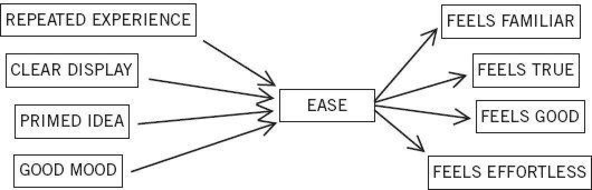

Whenever you are conscious, and perhaps even when you are not, multiple computations are going on in your brain, which maintain and update current answers to some key questions: Is anything new going on? Is there a threat? Are things going well? Should my attention be redirected? Is more effort needed for this task? You can think of a cockpit, with a set of dials that indicate the current values of each of these essential variables. The assessments are carried out automatically by System 1, and one of their functions is to determine whether extra effort is required from System 2.
One of the dials measures cognitive ease, and its range is between “Easy” and “Strained.” Easy is a sign that things are going well—no threats, no major news, no need to redirect attention or mobilize effort. Strained indicates that a problem exists, which will require increased mobilization of System 2. Conversely, you experience cognitive strain. Cognitive strain is affected by both the current level of effort and the presence of unmet demands. The surprise is that a single dial of cognitive ease is connected to a large network of diverse inputs and outputs. Figure 5 tells the story.
The figure suggests that a sentence that is printed in a clear font, or has been repeated, or has been primed, will be fluently processed with cognitive ease. Hearing a speaker when you are in a good mood, or even when you have a pencil stuck crosswise in your mouth to make you “smile,” also induces cognitive ease. Conversely, you experience cognitive strain when you read instructions in a poor font, or in faint colors, or worded in complicated language, or when you are in a bad mood, and even when you frown.

Figure 5. Causes and Consequences of Cognitive Ease
The various causes of ease or strain have interchangeable effects. When you are in a state of cognitive ease, you are probably in a good mood, like what you see, believe what you hear, trust your intuitions, and feel that the current situation is comfortably familiar. You are also likely to be relatively casual and superficial in your thinking. When you feel strained, you are more likely to be vigilant and suspicious, invest more effort in what you are doing, feel less comfortable, and make fewer errors, but you also are less intuitive and less creative than usual.
Illusions of Remembering
The word illusion brings visual illusions to mind, because we are all familiar with pictures that mislead. But vision is not the only domain of illusions; memory is also susceptible to them, as is thinking more generally.
David Stenbill, Monica Bigoutski, Sh"imight=s is pictana Tirana. I just made up these names. If you encounter any of them within the next few minutes you are likely to remember where you saw them. You know, and will know for a while, that these are not the names of minor celebrities. But suppose that a few days from now you are shown a long list of names, including some minor celebrities and “new” names of people that you have never heard of; your task will be to check every name of a celebrity in the list. There is a substantial probability that you will identify David Stenbill as a well-known person, although you will not (of course) know whether you encountered his name in the context of movies, sports, or politics. Larry Jacoby, the psychologist who first demonstrated this memory illusion in the laboratory, titled his article “Becoming Famous Overnight.” How does this happen? Start by asking yourself how you know whether or not someone is famous. In some cases of truly famous people (or of celebrities in an area you follow), you have a mental file with rich information about a person—think Albert Einstein, Bono, Hillary Clinton. But you will have no file of information about David Stenbill if you encounter his name in a few days. All you will have is a sense of familiarity—you have seen this name somewhere.
Jacoby nicely stated the problem: “The experience of familiarity has a simple but powerful quality of ‘pastness’ that seems to indicate that it is a direct reflection of prior experience.” This quality of pastness is an illusion. The truth is, as Jacoby and many followers have shown, that the name David Stenbill will look familiar when you see it because you will see it more clearly. Words that you have seen before become easier to see again—you can identify them better than other words when they are shown very briefly or masked by noise, and you will be quicker (by a few hundredths of a second) to read them than to read other words. In short, you experience greater cognitive ease in perceiving a word you have seen earlier, and it is this sense of ease that gives you the impression of familiarity.
Figure 5 suggests a way to test this. Choose a completely new word, make it easier to see, and it will be more likely to have the quality of pastness. Indeed, a new word is more likely to be recognized as familiar if it is unconsciously primed by showing it for a few milliseconds just before the test, or if it is shown in sharper contrast than some other words in the list. The link also operates in the other direction. Imagine you are shown a list of words that are more or less out of focus. Some of the words are severely blurred, others less so, and your task is to identify the words that are shown more clearly. A word that you have seen recently will appear to be clearer than unfamiliar words. As figure 5 indicates, the various ways of inducing cognitive ease or strain are interchangeable; you may not know precisely what it is that makes things cognitively easy or strained. This is how the illusion of familiarity comes about.
Illusions of Truth
“New York is a large city in the United States.” “The moon revolves around Earth.” “A chicken has four legs.” In all these cases, you quickly retrieved a great deal of related information, almost all pointing one way or another. You knew soon after reading them that the first two statements are true and the last one is false. Note, however, that the statement “A chicken has three legs” is more obviously false than “A chicken has four legs.” Your associative machinery slows the judgment of the latter sentence by delivering the fact that many animals have four legs, and perhaps also that supermarkets often sell chickenordblurred, legs in packages of four. System 2 was involved in sifting that information, perhaps raising the issue of whether the question about New York was too easy, or checking the meaning of revolves.
Think of the last time you took a driving test. Is it true that you need a special license to drive a vehicle that weighs more than three tons? Perhaps you studied seriously and can remember the side of the page on which the answer appeared, as well as the logic behind it. This is certainly not how I passed driving tests when I moved to a new state. My practice was to read the booklet of rules quickly once and hope for the best. I knew some of the answers from the experience of driving for a long time. But there were questions where no good answer came to mind, where all I had to go by was cognitive ease. If the answer felt familiar, I assumed that it was probably true. If it looked new (or improbably extreme), I rejected it. The impression of familiarity is produced by System 1, and System 2 relies on that impression for a true/false judgment.
The lesson of figure 5 is that predictable illusions inevitably occur if a judgment is based on an impression of cognitive ease or strain. Anything that makes it easier for the associative machine to run smoothly will also bias beliefs. A reliable way to make people believe in falsehoods is frequent repetition, because familiarity is not easily distinguished from truth. Authoritarian institutions and marketers have always known this fact. But it was psychologists who discovered that you do not have to repeat the entire statement of a fact or idea to make it appear true. People who were repeatedly exposed to the phrase “the body temperature of a chicken” were more likely to accept as true the statement that “the body temperature of a chicken is 144°” (or any other arbitrary number). The familiarity of one phrase in the statement sufficed to make the whole statement feel familiar, and therefore true. If you cannot remember the source of a statement, and have no way to relate it to other things you know, you have no option but to go with the sense of cognitive ease.
How to Write a Persuasive Message
Suppose you must write a message that you want the recipients to believe. Of course, your message will be true, but that is not necessarily enough for people to believe that it is true. It is entirely legitimate for you to enlist cognitive ease to work in your favor, and studies of truth illusions provide specific suggestions that may help you achieve this goal.
The general principle is that anything you can do to reduce cognitive strain will help, so you should first maximize legibility. Compare these two statements:
Adolf Hitler was born in 1892.
Adolf Hitler was born in 1887.
Both are false (Hitler was born in 1889), but experiments have shown that the first is more likely to be believed. More advice: if your message is to be printed, use high-quality paper to maximize the contrast between characters and their background. If you use color, you are more likely to be believed if your text is printed in bright blue or red than in middling shades of green, yellow, or pale blue.
If you care about being thought credible and intelligent, do not use complex language where simpler language will do. My Princeton ton colleague Danny Oppenheimer refuted a myth prevalent a wo ton colmong undergraduates about the vocabulary that professors find most impressive. In an article titled “Consequences of Erudite Vernacular Utilized Irrespective of Necessity: Problems with Using Long Words Needlessly,” he showed that couching familiar ideas in pretentious language is taken as a sign of poor intelligence and low credibility.
In addition to making your message simple, try to make it memorable. Put your ideas in verse if you can; they will be more likely to be taken as truth. Participants in a much cited experiment read dozens of unfamiliar aphorisms, such as:
Woes unite foes.
Little strokes will tumble great oaks.
A fault confessed is half redressed.
Other students read some of the same proverbs transformed into nonrhyming versions:
Woes unite enemies.
Little strokes will tumble great trees.
A fault admitted is half redressed.
The aphorisms were judged more insightful when they rhymed than when they did not.
Finally, if you quote a source, choose one with a name that is easy to pronounce. Participants in an experiment were asked to evaluate the prospects of fictitious Turkish companies on the basis of reports from two brokerage firms. For each stock, one of the reports came from an easily pronounced name (e.g., Artan) and the other report came from a firm with an unfortunate name (e.g., Taahhut). The reports sometimes disagreed. The best procedure for the observers would have been to average the two reports, but this is not what they did. They gave much more weight to the report from Artan than to the report from Taahhut. Remember that System 2 is lazy and that mental effort is aversive. If possible, the recipients of your message want to stay away from anything that reminds them of effort, including a source with a complicated name.
All this is very good advice, but we should not get carried away. High-quality paper, bright colors, and rhyming or simple language will not be much help if your message is obviously nonsensical, or if it contradicts facts that your audience knows to be true. The psychologists who do these experiments do not believe that people are stupid or infinitely gullible. What psychologists do believe is that all of us live much of our life guided by the impressions of System 1—and we often do not know the source of these impressions. How do you know that a statement is true? If it is strongly linked by logic or association to other beliefs or preferences you hold, or comes from a source you trust and like, you will feel a sense of cognitive ease. The trouble is that there may be other causes for your feeling of ease—including the quality of the font and the appealing rhythm of the prose—and you have no simple way of tracing your feelings to their source. This is the message of figure 5: the sense of ease or strain has multiple causes, and it is difficult to tease them apart. Difficult, but not impossible. People can overcome some of the superficial factors that produce illusions of truth when strongly motivated to do so. On most occasions, however, the lazy System 2 will adopt the suggestions of System 1 and march on.
Strain and Effort
The symmetry of many associative connections was a dominant theme in the discussion of associative coherence. As we saw earlier, people who are made to “smile” or “frown” by sticking a pencil in their mouth or holding a ball between their furrowed brows are prone to experience the emotions that frowning and smiling normally express. The same self-reinforcing reciprocity is found in studies of cognitive ease. On the one hand, cognitive strain is experienced when the effortful operations of System 2 are engaged. On the other hand, the experience of cognitive strain, whatever its source, tends to mobilize System 2, shifting people’s approach to problems from a casual intuitive mode to a more engaged and analytic mode.
The bat-and-ball problem was mentioned earlier as a test of people’s tendency to answer questions with the first idea that comes to their mind, without checking it. Shane Frederick’s Cognitive Reflection Test consists of the bat-and-ball problem and two others, all chosen because they evoke an immediate intuitive answer that is incorrect. The other two items in the CRT are:
If it takes 5 machines 5 minutes to make 5 widgets, how long would it take 100 machines to make 100 widgets?
100 minutes OR 5 minutes
In a lake, there is a patch of lily pads. Every day, the patch doubles in size.
If it takes 48 days for the patch to cover the entire lake, how long would it take for the patch to cover half of the lake?
24 days OR 47 days
The correct answers to both problems are in a footnote at the bottom of the page.* The experimenters recruited 40 Princeton students to take the CRT. Half of them saw the puzzles in a small font in washed-out gray print. The puzzles were legible, but the font induced cognitive strain. The results tell a clear story: 90% of the students who saw the CRT in normal font made at least one mistake in the test, but the proportion dropped to 35% when the font was barely legible. You read this correctly: performance was better with the bad font. Cognitive strain, whatever its source, mobilizes System 2, which is more likely to reject the intuitive answer suggested by System 1.
The Pleasure of Cognitive Ease
An article titled “Mind at Ease Puts a Smile on the Face” describes an experiment in which participants were briefly shown pictures of objects. Some of these pictures were made easier to recognize by showing the outline of the object just before the complete image was shown, so briefly that the contours were never noticed. Emotional reactions were measured by recording electrical impulses from facial muscles, registering changes of expression that are too slight and too brief to be detectable by observers. As expected, people showed a faint smile and relaxed brows when the pictures were easier to see. It appears to be a feature of System 1 that cognitive ease is associated with good feelings.
As expected, easily pronounced words evoke a favorable attitude. Companies with pronounceable names dmisorrectlo better than others for the first week after the stock is issued, though the effect disappears over time. Stocks with pronounceable trading symbols (like KAR or LUNMOO) outperform those with tongue-twisting tickers like PXG or RDO—and they appear to retain a small advantage over some time. A study conducted in Switzerland found that investors believe that stocks with fluent names like Emmi, Swissfirst, and Comet will earn higher returns than those with clunky labels like Geberit and Ypsomed.
As we saw in figure 5, repetition induces cognitive ease and a comforting feeling of familiarity. The famed psychologist Robert Zajonc dedicated much of his career to the study of the link between the repetition of an arbitrary stimulus and the mild affection that people eventually have for it. Zajonc called it the mere exposure effect. A demonstration conducted in the student newspapers of the University of Michigan and of Michigan State University is one of my favorite experiments. For a period of some weeks, an ad-like box appeared on the front page of the paper, which contained one of the following Turkish (or Turkish-sounding) words: kadirga, saricik, biwonjni, nansoma, and iktitaf. The frequency with which the words were repeated varied: one of the words was shown only once, the others appeared on two, five, ten, or twenty-five separate occasions. (The words that were presented most often in one of the university papers were the least frequent in the other.) No explanation was offered, and readers’ queries were answered by the statement that “the purchaser of the display wished for anonymity.”
When the mysterious series of ads ended, the investigators sent questionnaires to the university communities, asking for impressions of whether each of the words “means something ‘good’ or something ‘bad.’” The results were spectacular: the words that were presented more frequently were rated much more favorably than the words that had been shown only once or twice. The finding has been confirmed in many experiments, using Chinese ideographs, faces, and randomly shaped polygons.
The mere exposure effect does not depend on the conscious experience of familiarity. In fact, the effect does not depend on consciousness at all: it occurs even when the repeated words or pictures are shown so quickly that the observers never become aware of having seen them. They still end up liking the words or pictures that were presented more frequently. As should be clear by now, System 1 can respond to impressions of events of which System 2 is unaware. Indeed, the mere exposure effect is actually stronger for stimuli that the individual never consciously sees.
Zajonc argued that the effect of repetition on liking is a profoundly important biological fact, and that it extends to all animals. To survive in a frequently dangerous world, an organism should react cautiously to a novel stimulus, with withdrawal and fear. Survival prospects are poor for an animal that is not suspicious of novelty. However, it is also adaptive for the initial caution to fade if the stimulus is actually safe. The mere exposure effect occurs, Zajonc claimed, because the repeated exposure of a stimulus is followed by nothing bad. Such a stimulus will eventually become a safety signal, and safety is good. Obviously, this argument is not restricted to humans. To make that point, one of Zajonc’s associates exposed two sets of fertile chicken eggs to different tones. After they hatched, the chicks consistently emitted fewer distress calls when exposed to the tone they had heard while inhabiting the shell.
Zajonc offered an eloquent summary of hing icts program of research:
The consequences of repeated exposures benefit the organism in its relations to the immediate animate and inanimate environment. They allow the organism to distinguish objects and habitats that are safe from those that are not, and they are the most primitive basis of social attachments. Therefore, they form the basis for social organization and cohesion—the basic sources of psychological and social stability.
The link between positive emotion and cognitive ease in System 1 has a long evolutionary history.
Ease, Mood, and Intuition
Around 1960, a young psychologist named Sarnoff Mednick thought he had identified the essence of creativity. His idea was as simple as it was powerful: creativity is associative memory that works exceptionally well. He made up a test, called the Remote Association Test (RAT), which is still often used in studies of creativity.
For an easy example, consider the following three words:
cottage Swiss cake
Can you think of a word that is associated with all three? You probably worked out that the answer is cheese. Now try this:
dive light rocket
This problem is much harder, but it has a unique correct answer, which every speaker of English recognizes, although less than 20% of a sample of students found it within 15 seconds. The answer is sky. Of course, not every triad of words has a solution. For example, the words dream, ball, book do not have a shared association that everyone will recognize as valid.
Several teams of German psychologists that have studied the RAT in recent years have come up with remarkable discoveries about cognitive ease. One of the teams raised two questions: Can people feel that a triad of words has a solution before they know what the solution is? How does mood influence performance in this task? To find out, they first made some of their subjects happy and others sad, by asking them to think for several minutes about happy or sad episodes in their lives. Then they presented these subjects with a series of triads, half of them linked (such as dive, light, rocket) and half unlinked (such as dream, ball, book), and instructed them to press one of two keys very quickly to indicate their guess about whether the triad was linked. The time allowed for this guess, 2 seconds, was much too short for the actual solution to come to anyone’s mind.
The first surprise is that people’s guesses are much more accurate than they would be by chance. I find this astonishing. A sense of cognitive ease is apparently generated by a very faint signal from the associative machine, which “knows” that the three words are coherent (share an association) long before the association is retrieved. The role of cognitive ease in the judgment was confirmed experimentally by another German team: manipulations that increase cognitive ease (priming, a clear font, pre-exposing words) all increase the tendency to see the words as linked.
Another remarkable discovery is the powerful effect of mood on this intuitive performance. The experimentershape tende computed an “intuition index” to measure accuracy. They found that putting the participants in a good mood before the test by having them think happy thoughts more than doubled accuracy. An even more striking result is that unhappy subjects were completely incapable of performing the intuitive task accurately; their guesses were no better than random. Mood evidently affects the operation of System 1: when we are uncomfortable and unhappy, we lose touch with our intuition.
These findings add to the growing evidence that good mood, intuition, creativity, gullibility, and increased reliance on System 1 form a cluster. At the other pole, sadness, vigilance, suspicion, an analytic approach, and increased effort also go together. A happy mood loosens the control of System 2 over performance: when in a good mood, people become more intuitive and more creative but also less vigilant and more prone to logical errors. Here again, as in the mere exposure effect, the connection makes biological sense. A good mood is a signal that things are generally going well, the environment is safe, and it is all right to let one’s guard down. A bad mood indicates that things are not going very well, there may be a threat, and vigilance is required. Cognitive ease is both a cause and a consequence of a pleasant feeling.
The Remote Association Test has more to tell us about the link between cognitive ease and positive affect. Briefly consider two triads of words:
sleep mail switch
salt deep foam
You could not know it, of course, but measurements of electrical activity in the muscles of your face would probably have shown a slight smile when you read the second triad, which is coherent (sea is the solution). This smiling reaction to coherence appears in subjects who are told nothing about common associates; they are merely shown a vertically arranged triad of words and instructed to press the space bar after they have read it. The impression of cognitive ease that comes with the presentation of a coherent triad appears to be mildly pleasurable in itself.
The evidence that we have about good feelings, cognitive ease, and the intuition of coherence is, as scientists say, correlational but not necessarily causal. Cognitive ease and smiling occur together, but do the good feelings actually lead to intuitions of coherence? Yes, they do. The proof comes from a clever experimental approach that has become increasingly popular. Some participants were given a cover story that provided an alternative interpretation for their good feeling: they were told about music played in their earphones that “previous research showed that this music influences the emotional reactions of individuals.” This story completely eliminates the intuition of coherence. The finding shows that the brief emotional response that follows the presentation of a triad of words (pleasant if the triad is coherent, unpleasant otherwise) is actually the basis of judgments of coherence. There is nothing here that System 1 cannot do. Emotional changes are now expected, and because they are unsurprising they are not linked causally to the words.
This is as good as psychological research ever gets, in its combination of experimental techniques and in its results, which are both robust and extremely surprising. We have learned a great deal about the automatic workings of System 1 in the last decades. Much of what we now know would have sounded like science fiction thirty or forty years ago. It was beyond imagining that bad font influences judgments of truth and improves cognitive performance, or that an emotional response to the cognitive ease of a tri pr that aad of words mediates impressions of coherence. Psychology has come a long way.
Speaking of Cognitive Ease
“Let’s not dismiss their business plan just because the font makes it hard to read.”
“We must be inclined to believe it because it has been repeated so often, but let’s think it through again.”
“Familiarity breeds liking. This is a mere exposure effect.”
“I’m in a very good mood today, and my System 2 is weaker than usual. I should be extra careful.”
P